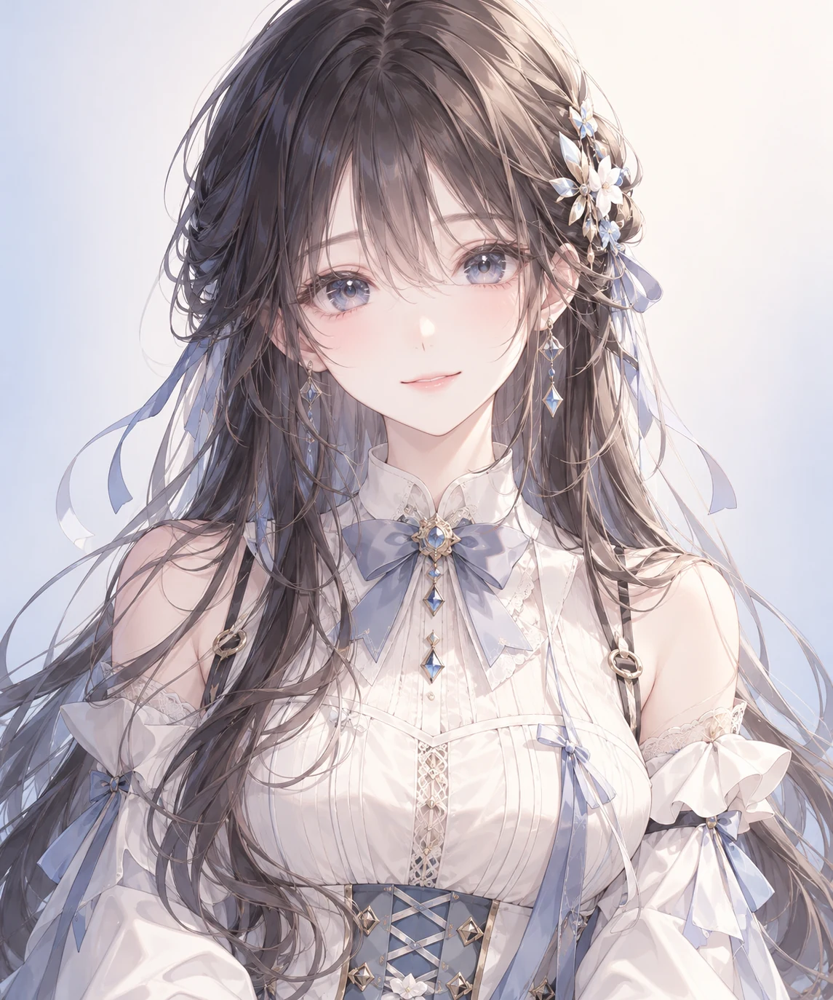
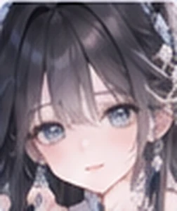

A little light, a little warmth, a little wonder.
你好，很高兴遇见你。
她可以很安静，也可以因你的一句话偷偷开心。先从角色美术与情绪演出开始，慢慢让每一份回应都有温度。
CHARACTER STUDIO / 角色预览
概念图 · 非 Live2D 成品柚希 ゆずき
✧
✦
✧

现在的心情 · 温柔
EXPRESSIONS
不止一种心情
点击一种表情，查看对应的概念画面和计划中的眉、眼、嘴、动作参数。当前原画尚未分层，因此预览图不是实时面部变形。

平静
轻柔注视，嘴角若有若无地上扬。
✦ 点击表情会更新行为参数。未来绑定模型时，同样的事件可驱动 Live2D。
01先做好脸
精细五官、眉眼独立控制、补画遮挡关系。
02再让情绪流动
表情不是切图，而是一组可渐变参数。
03最终接入 Live2D
导入实际 .model3.json 后替换占位角色渲染器。
NEXT MILESTONE
从好看的角色，到真正会动的她。
本次交付包含原创角色概念图、16 态参考、角色美术规范与可运行的网页实验室。真正的 .cmo3 / .moc3 / 分层 PSD 需要补画与 Cubism 绑定，绝不将图片展示当作已经完成的 Live2D。